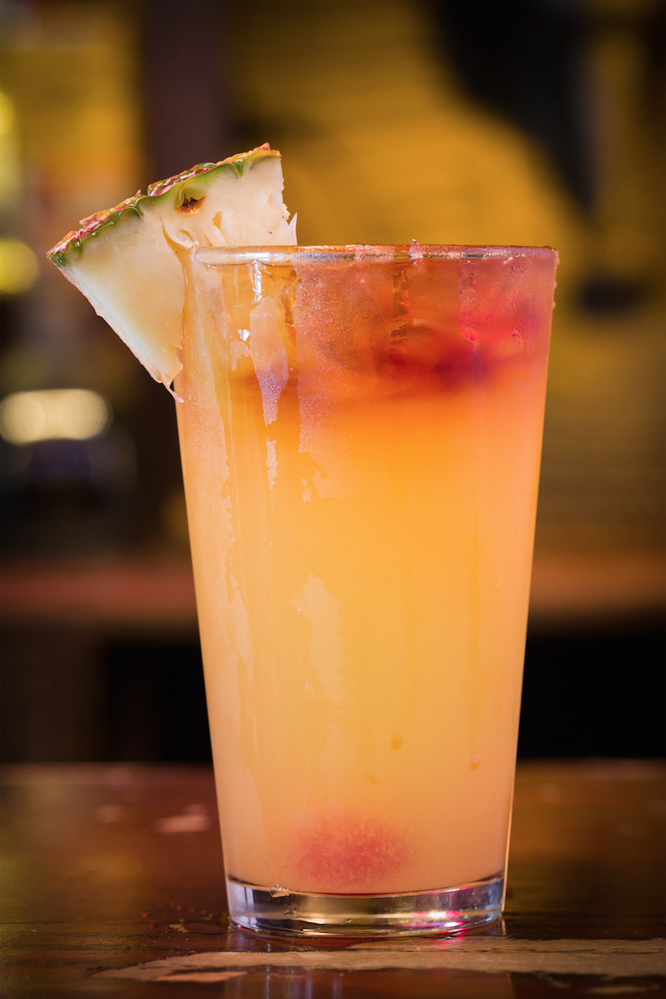
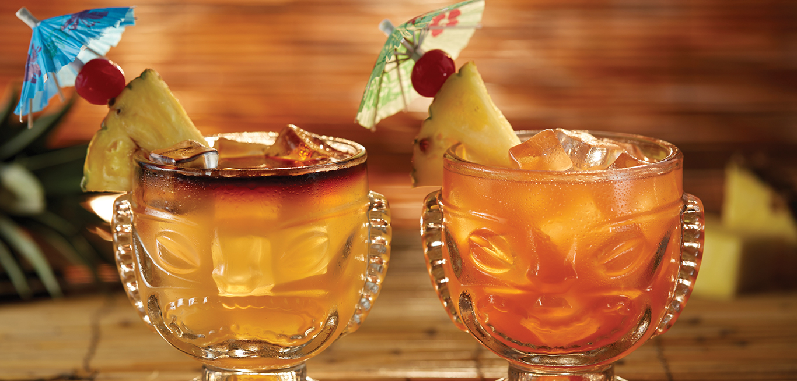
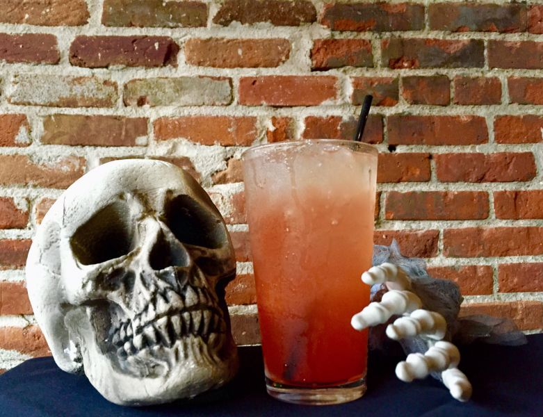

Зомби
- золотой ром – 20 мл
- темный ром – 20 мл
- светлый ром – 20 мл
- абрикосовый ликер – 15 мл
- вишневый ликер – 15 мл
- гранатовый сироп (гренадин) – 5 мл
- ананасовый сок – 30 мл
- апельсиновый сок – 30 мл
- лед в кубиках – 200 грамм
- колотый лед – 250 грамм
- апельсин – 1 долька
- коктейльная вишня – 1 штука

История создания
Рецепт коктейля «Зомби» придумал в 1934 году владелец известного в Калифорнии бара Дон Бич (Don Beach). По одной из версий напиток получил название благодаря быстрому опьяняющему эффекту. Две порции превращают большинство посетителей в зомби. Еще этот коктейль иногда используется как средство от похмелья. По составу и вкусу он похож на «Май Тай». Сразу после появления «Зомби» стал популярным на родине. В 30-х годах он часто мелькал в голливудских фильмах или герои кино упоминали о нем.
Способ приготовления
1. Смешать в шейкере с льдом в кубиках три рома, ликеры, соки и гренадин. Несколько раз интенсивно встряхнуть
2. Наполнить бокал колотым льдом, затем перелить в него смесь из шейкера.
3. Украсить готовый коктейль долькой апельсина и вишенкой.
4. Пить через трубочку.

Как пить зомби
Особого этикета распития у Зомби нет. Обычно этот коктейль подают с трубочкой, вследствие чего его пьют небольшими глотками.
